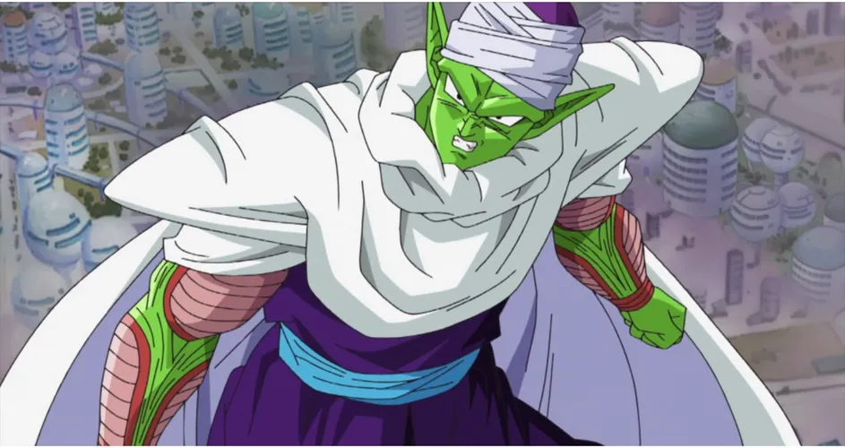

Dragon Ball Z is a popular spinoff of the also popular original series Dragon Ball. Dragon Ball Z originally aired in Japan in the late 1980s and ran through the mid-'90s with the English version airing in the US during the 2000s and 2010's. The show continues to follow its main character Goku and his band of friends as the defend earth from certian destruction. Dragon Ball Z represents a much simpler time in my life. The action-packed storyline kept me and my peers engaged for hours, as we watched our favorite characters settle their differences the best way they knew how; Kung Fu! Here are few of my favorite/most memerable characters.
| Character Picture | Name | Background | Hands or No-Hands |
|---|---|---|---|
| Goku | Member of the Saiyan alien race that protect earth and its inhabitats | 4.9 Stars hands rating. Like the handiest of hands |
|
| Majin Buu | Similar to the likes of an genie. Majin Buu was brought back from the dead souly to help Babidi conquer the universe. | 4.5 Stars hands rating. |
|
|  | Piccolo | Once a enemy of Goku, Piccolo joins forces with Goku to face mutual treats. Their relationship evoles and Piccolo eventual trains Goku's son Gohan in Gokus absences. | 4.0 Stars hands rating. |
| Krillin | Krillin is one of few human charaters within the series. He's well known for his courage, witty remarks and his uncanny ability of always ending up on the bad side of an beatdow. Krillin's revolving door of butt kickings shouldn't come as an surprise, as the major of his opponents are trained alians warriors dwarfing him size and stature. Krillin consistantly displays his loyalty and courage in situation were its evident thathe's matched and for that, gained the respect of many. | 2.75 Stars hands rating. 5 for 5 when comes to heart! |